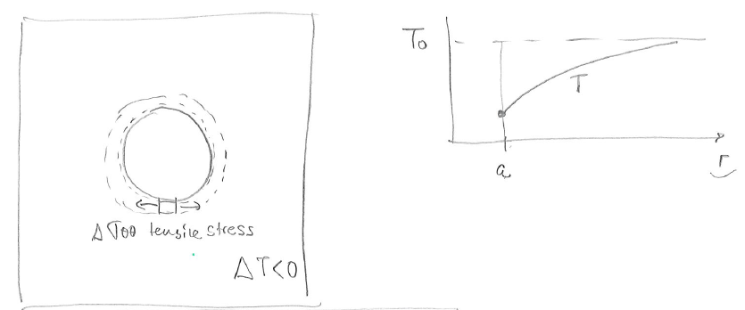
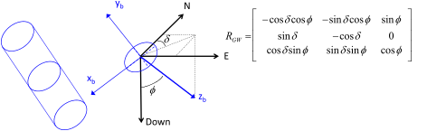

Next: 6.8 Strength anisotropy Up: 6. Wellbore Stability Previous: 6.6 Mechanical stability of Contents
Wellbore stability is affected by various factors other than far-field stresses and mud pressure. Some of the most important factors include: changes of temperature, changes of salinity in the resident brine within the pore space in the rock, and changes of pore pressure near the wellbore wall.
Drilling mud is usually cooler than the geological formations in the subsurface.
Because of such difference, drilling mud usually lowers the temperature of the rock near the wellbore.
The process is time dependent and variations of temperature  in time and space (in the absence of fluid flow) can be modeled using the heat diffusivity equation:
in time and space (in the absence of fluid flow) can be modeled using the heat diffusivity equation:
 |
(6.22) |
where heat diffusivity is
 proportional to the heat conductivity
proportional to the heat conductivity  , and inversely proportional to the rock mass density
, and inversely proportional to the rock mass density  and the heat capacity
and the heat capacity  .
The operator
.
The operator
 indicates variations in space.
The heat diffusivity equation and the equations of thermo-elasticity (Section 3.7.2) permit solving the changes of strains and stresses around the wellbore due to time-dependent changes of temperature.
indicates variations in space.
The heat diffusivity equation and the equations of thermo-elasticity (Section 3.7.2) permit solving the changes of strains and stresses around the wellbore due to time-dependent changes of temperature.
 |
At steady-state conditions, the change in hoop stress
 around any point on the wellbore wall due to a change in temperature
around any point on the wellbore wall due to a change in temperature  is:
is:
 |
(6.23) |
where  is the linear thermal expansion coefficient.
Cooling leads to hoop stress relaxation and possibly tensile effective stress, while heating leads to increased compression in the tangential direction.
is the linear thermal expansion coefficient.
Cooling leads to hoop stress relaxation and possibly tensile effective stress, while heating leads to increased compression in the tangential direction.
Chemo-electrical effects are most relevant to small sub-micron particles, such as clays, the building-blocks of mudrocks and shales. The forces that act on clay particles include (Figure 6.27):
![\includegraphics[scale=0.75]{.././Figures/split/8-InterparticleDistance.pdf}](img984.svg) |
Shale chemical instability involves changes of the electrical forces between clay platelets due to changes of ionic concentration of the resident brine within the rock pore space. The equilibrium distance between particles is inversely proportional to salinity. Hence, decreasing salinity promotes chemo-electrical swelling of shale (see example in Fig. 6.28). During drilling, the change in ionic concentration in resident brine is caused by leak-off of low-salinity water from drilling mud into the formation saturated with high salinity brine. Smectite clays are most sensitive to swelling upon water freshening and hydration.
Shale swelling leads to an increase of hoop stress and sometimes rock weakening around the wellbore wall. Such changes promote shear failure and breakouts/washouts (Fig. 6.29). Prevention of shale chemical instability requires modeling of solute diffusive-advective transport between the drilling mud and the formation water in the rock. Higher mud pressures result in higher leak-off, and therefore, in more rapid ionic exchange within the shale. The process is time-dependent. Thus, the expected break out angle results from a combination of mechanical factors (stresses around the wellbore) and shale sensitivity to low salinity muds.
The solutions to wellbore instability problems due to shale chemo-electrical swelling are: increasing the salinity of water-based drilling muds, using oil-based muds instead of water-based muds, cooling the wellbore to counteract increases of hoop stress, and using underbalanced-drilling to minimize leak-off of water from drilling mud.
So far we have assumed that the radial effective stress at the wellbore wall is . Such assumption implies a perfect and sharp “mudcake” that creates a sharp gradient between the mud pressure and the pore pressure, such that, viscous forces apply an effective stress on the wellbore wall (Fig. 6.3). However, mud water leak off and mud filtration can occur over time decreasing the sharpness of such gradient and reducing the effective stresses in the near wellbore region. A reduction of effective stress lowers the strength of rock and favors rock failure around the wellbore. Hence, a wellbore could be stable right after drilling, but unstable after some time due to mud filtration and loss of radial stress support.
 |

![\includegraphics[scale=0.65]{.././Figures/split/7-23.pdf}](img985.svg)